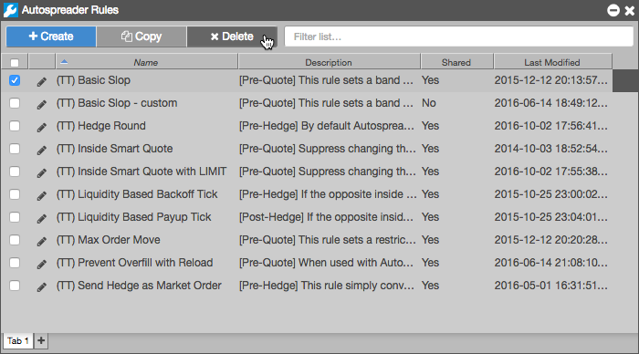

    <div>
      <h3>To delete a rule</h3>
 
      <ol>
     
       <li>Select a rule in the Rule Manager (e.g., Basic Slop)</li>
       <li>Click <b>Delete</b>.

       <p></p>
   </li>
       <li>Confirm the that you want to delete the rule and click <b>Yes</b>.</li>
      </ol>
    </div>